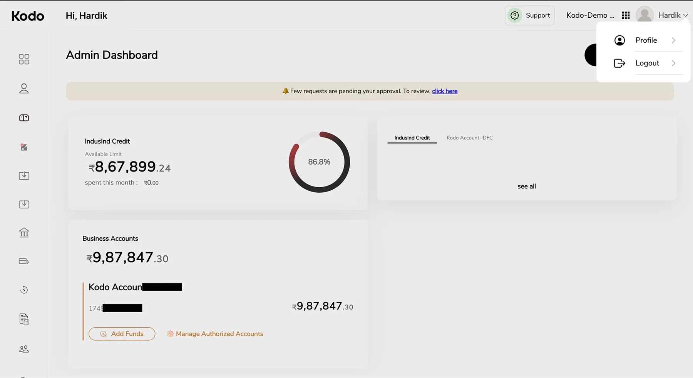

Identifying the Problem
Users couldn't answer the most basic question — "what needs my attention today?" — without clicking through multiple screens. The nav drawer had grown organically over time into a long, flat list of options with no grouping logic.

What We Made
We rebuilt the dashboard around what finance teams actually check daily. Vendor payments and reimbursements moved to the top — showing pending amounts and key states at a glance, with how much has already gone out. Below that, business account details give teams visibility into available cash across every account, with history. The nav drawer was consolidated — related options grouped, redundant entries merged — into something you can scan in seconds.
Side by side, the shift is immediate — a flat, unranked list becomes a clear priority order, and the numbers that matter most surface before anything else does.
Outcome
Questions around "where do I find X" dropped noticeably in the weeks after release — the dashboard now explains itself, and onboarding new users got visibly easier. Time to reach the most-used actions (initiating a payment, checking pending approvals) went from 3–4 clicks to 1–2.